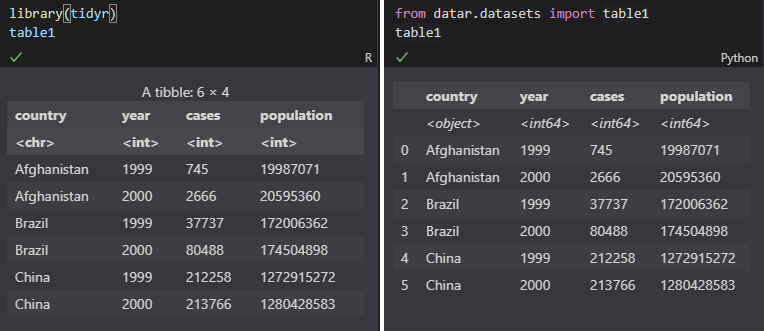

Showing data types under column names when printing pandas data frames
One of the features that I like about dplyr/tidyr is that the data types are always visible when you print a data frame/tibble out:
> library(tidyr)
> table1
# A tibble: 6 x 4
country year cases population
<chr> <int> <int> <int>
1 Afghanistan 1999 745 19987071
2 Afghanistan 2000 2666 20595360
3 Brazil 1999 37737 172006362
4 Brazil 2000 80488 174504898
5 China 1999 212258 1272915272
6 China 2000 213766 1280428583
But in python (pandas), you only see this:
>>> from datar.all import options
>>> from datar.datasets import table1
>>> options(frame_format_patch=False)
>>> table1
country year cases population
0 Afghanistan 1999 745 19987071
1 Afghanistan 2000 2666 20595360
2 Brazil 1999 37737 172006362
3 Brazil 2000 80488 174504898
4 China 1999 212258 1272915272
5 China 2000 213766 1280428583
If you want to see the data types:
>>> table1.dtypes
country object
year int64
cases int64
population int64
dtype: object
Then how can we display those dtypes under the column names just as dplyr/tidyr does for tibbles? Here is the expected result:
>>> options(frame_format_patch=True)
>>> table1
country year cases population
<object> <int64> <int64> <int64>
0 Afghanistan 1999 745 19987071
1 Afghanistan 2000 2666 20595360
2 Brazil 1999 37737 172006362
3 Brazil 2000 80488 174504898
4 China 1999 212258 1272915272
5 China 2000 213766 1280428583
It looks like this when a data frame is shown in Jupyter Notebook:

It's sometimes confusing if the data types are invisible. For example:
>>> table1['year'] = table1['year'].astype(str)
>>> table1['cases'] = table1['cases'].astype(str)
>>> table1['sum'] = table1['year'] + table1['cases']
>>> table1['sum_expected'] = table1['year'].astype(int) + table1['cases'].astype(int)
>>> table1
country year cases population sum sum_expected
<object> <object> <object> <int64> <object> <int64>
0 Afghanistan 1999 745 19987071 1999745 2744
1 Afghanistan 2000 2666 20595360 20002666 4666
2 Brazil 1999 37737 172006362 199937737 39736
3 Brazil 2000 80488 174504898 200080488 82488
4 China 1999 212258 1272915272 1999212258 214257
5 China 2000 213766 1280428583 2000213766 215766
In such an intended case, we clearly know why the numbers are not adding up, as they are not any of the numeric types.
To implement this, attaching the dtypes to the column names was the inital thought. However, when it comes complicated when the column names have multiple levels (MultiIndex object). So then the idea became to insert the dtypes to the first row of the values.
Digging into the source code of pandas DataFrameFormatter, the format_col is a good place to inject the dtypes:
def format_col(self, i: int) -> List[str]:
"""Format column, add dtype ahead"""
frame = self.tr_frame
formatter = self._get_formatter(i)
+ dtype = frame.iloc[:, i].dtype.name
+ return [f'<{dtype}>'] + format_array(
- return format_array(
frame.iloc[:, i]._values,
formatter,
float_format=self.float_format,
na_rep=self.na_rep,
space=self.col_space.get(frame.columns[i]),
decimal=self.decimal,
leading_space=self.index,
)
Then, for the index, we also need to inject a place holder on the same row of the dtypes:
def get_strcols(self) -> List[List[str]]:
"""
Render a DataFrame to a list of columns (as lists of strings).
"""
strcols = self._get_strcols_without_index()
if self.index:
# dtype
+ str_index = [""] + self._get_formatted_index(self.tr_frame)
- str_index = self._get_formatted_index(self.tr_frame)
strcols.insert(0, str_index)
return strcols
For HTMLFormatter, we also need to increase the nrows of a data frame by 1 for the dtypes, for both regular and hierarchical rows, add some styles for the first row, where the dtypes are showing. Fortunately, the write_tr(...) method allows us to pass tags, which will be added to the HTML tags later on. So we can set the following tags for the dtype rows:
style="font-style: italic;"
This will make the dtypes show in italic.